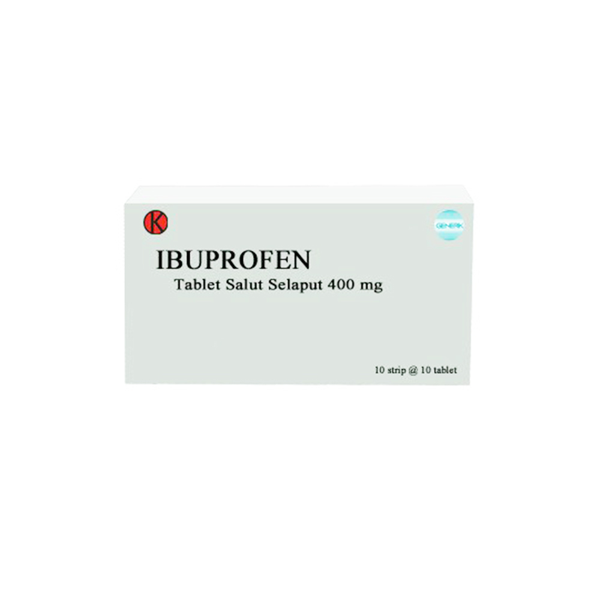

Sakit Kepala
Sakit kepala adalah salah satu gangguan yang paling umum dari system saraf dimana seseorang merasakan nyeri pada bagian kepala.
- Gejala : Terasa nyeri pada seluruh bagian kepala, biasanya disertai demam.
- Penyebab : Sakit kepala disebabkan oleh aktifnya saraf nyeri di kepala, baik akibat gangguan di kepala maupun akibat penyakit atau kondisi tertentu.
-
Pengobatan Konvensional

Paracetamol
- Kandungan : Paracetamol 500 mg
- Dewasa: 500–1.000 mg, diberikan setiap 4–6 jam sekali. Dosis maksimal 4.000 mg per hari.
- Bayi dan anak-anak: (dosis untuk 1 kali minum), Bayi usia 3–5 bulan: 60 mg, Bayi usia 6–23 bulan: 120 mg, Anak usia 2–3 tahun: 180 mg, Anak usia 4–5 tahun: 240 mg, Anak usia 6–7 tahun: 240–250 mg, Anak usia 8–9 tahun: 360–375 mg, Anak usia 10–11 tahun: 480–500 mg, Anak usia 12–15 tahun: 480–750 mg, Anak usia ≥16 tahun: 500–1.000 mg, Pada anak-anak, paracetamol oral dapat diberikan setiap 4–6 jam sekali. Pemberian obat maksimal 4 kali sehari.
- Indikasi : Paracetamol diketahui dapat bekerja pada pusat pengaturan suhu yang ada di otak untuk menurunkan suhu tubuh saat seseorang sedang mengalami demam. Selain itu, paracetamol juga bisa menghambat pembentukan prostaglandin, yaitu senyawa yang memicu nyeri dan bengkak ketika terjadi kerusakan atau cedera pada jaringan tubuh.
- Kontra indikasi :
- - Jangan menggunakan paracetamol jika Anda alergi terhadap obat ini. Beri tahu dokter tentang riwayat alergi yang Anda miliki.
- - Konsultasikan dengan dokter mengenai penggunaan paracetamol jika Anda menderita penyakit liver, seperti sirosis atau hepatitis, penyakit ginjal, atau kecanduan alkohol.
- - Beberapa produk paracetamol sirup mungkin mengandung aspartame. Perhatikan kandungan produk paracetamol yang akan dikonsumsi, terutama jika Anda menderita diabetes atau fenilketonuria.
- ESO : Jika dikonsumsi sesuai anjuran dokter dan petunjuk penggunaan, paracetamol jarang menimbulkan efek samping. Namun, jika digunakan secara berlebihan, dapat muncul beberapa efek samping seperti, Perut bagian kanan atas terasa sakit, Urine berwarna gelap, Tinja berwarna pucat atau keabu-abuan, Hilang nafsu makan, Lelah yang tidak biasa, dan Penyakit kuning.
Ibu Profen
- Kandungan : paracetamol, anti nyeri.
- Indikasi : Ibuprofen bekerja dengan cara menghambat pembentukan prostaglandin, yaitu zat kimia yang memicu timbulnya tanda dan gejala radang, termasuk nyeri, bengkak, atau demam, saat tubuh mengalami luka. Dengan begitu, keluhan akan mereda.
- Kontra indikasi :
- - Untuk ibuprofen dalam bentuk sirop, kocok botol kemasan sebelum digunakan. Gunakan sendok takar yang terdapat di kemasan supaya dosis yang dikonsumsi tepat.
- - Selama menggunakan ibuprofen, pasien dianjurkan untuk banyak minum air putih. Hal ini berguna untuk mencegah terjadinya gangguan fungsi ginjal.
- - Periksakan diri ke dokter jika demam berlangsung lebih dari 3 hari, atau jika nyeri tidak kunjung mereda dalam waktu 10 hari setelah penggunaan ibuprofen.
- ESO : Tiap obat berpotensi menyebabkan efek samping, termasuk ibuprofen. Beberapa efek samping yang dapat terjadi setelah menggunakan obat ini adalah: , Perut kembung, Mual dan muntah, Diare atau malah sembelit, Sakit maag.
-
Pengobatan Herbal
Daun Mint
- Daun mint ternyata dapat digunakan untuk mengobati sakit kepala atau pusing. Sebab, daun mint dipercaya dapat membantu melancarkan aliran darah dan oksigen ke otak. Kamu bisa menggunakan daun mint sebagai minyak esensial, mencampur daun mint dengan teh hangat, atau mengkonsumsi permen rasa daun mint.